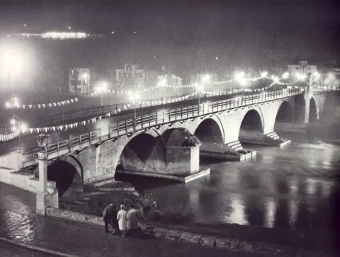
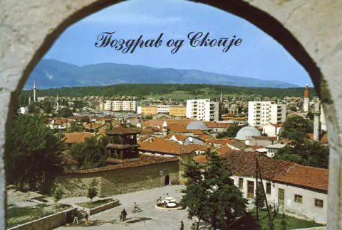
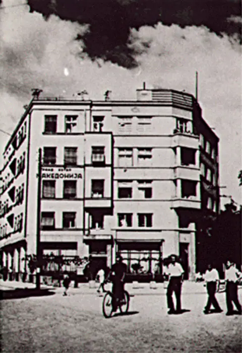

Ancienne carte d'orientation
38 sites sur l'ancien plan de Skopje. Touchez ou cliquez sur un point pour voir la photo.


Maison arabe

Pont en béton

Bit Pazar

La poste centrale

Hôpital municipal

Plage de la ville

Hammam de Daut Pacha

Pont de bois

Pont de fer

Gare ferroviaire

Foyer des invalides


Pont de pierre

Église catholique

Kuršumli An

Mosquée Mustafa Pacha

Banque nationale

Bibliothèque nationale

Cercle des officiers


Place Makedonija

Place de la Liberté

Poste 2

Tour de l'Horloge

Champ de foire


Saint-Démétrius


Sveti Spas

Assemblée de Macédoine

Monument aux combattants tombés

L'ancienne rue principale

Résidence étudiante

La forteresse Kale

Théâtre

Rue Kočo Racin

Rue du 11 Octobre

Faculté de philosophie


Hôtel Makedonija
Panorama